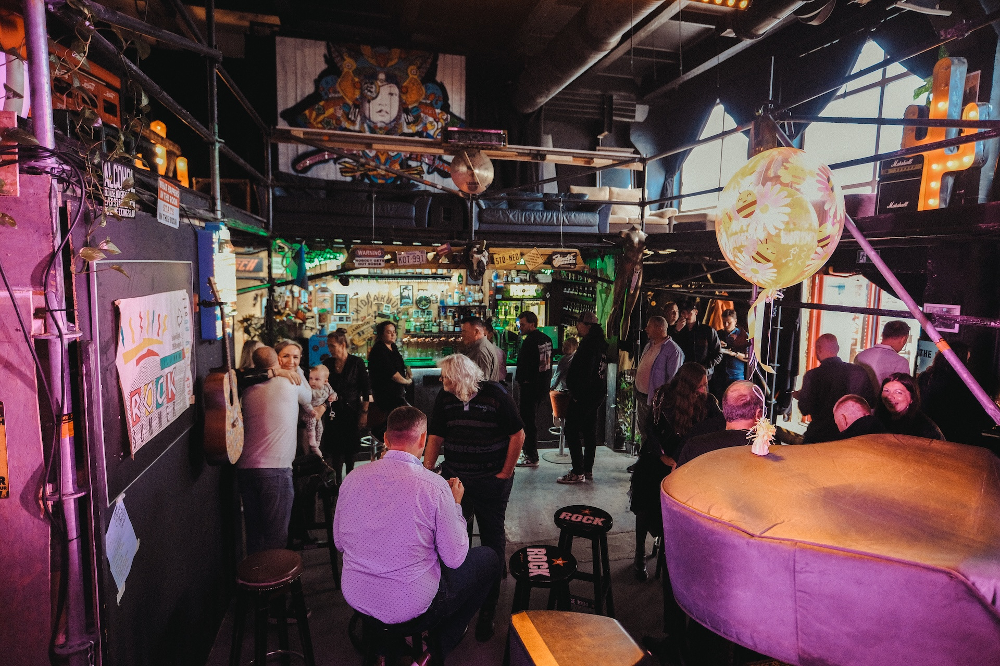
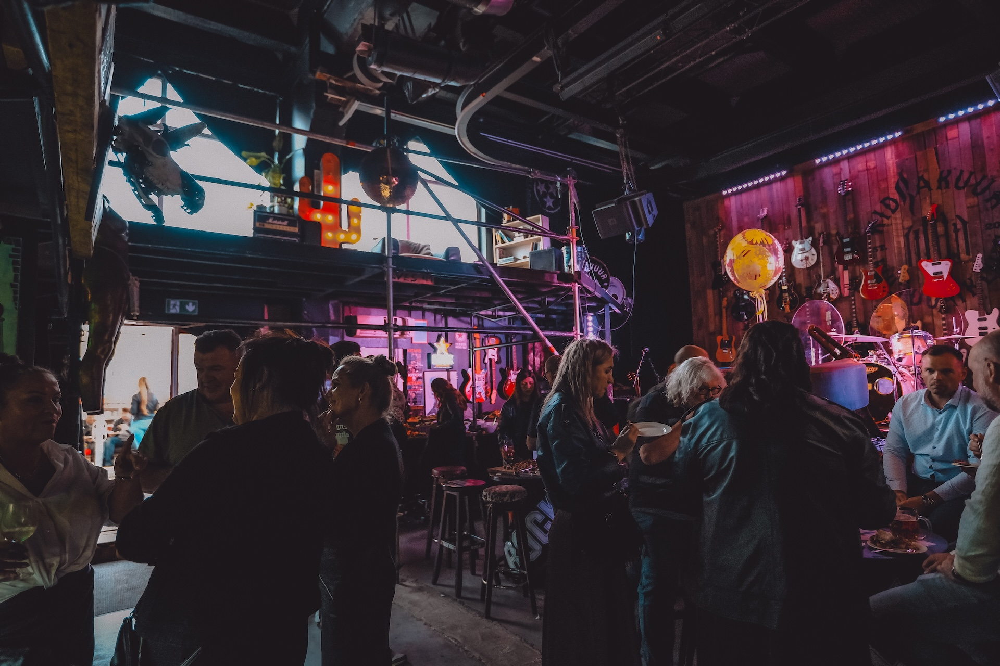
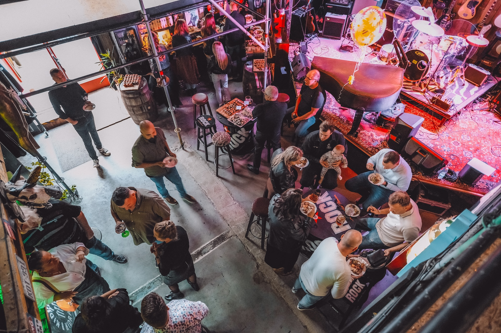
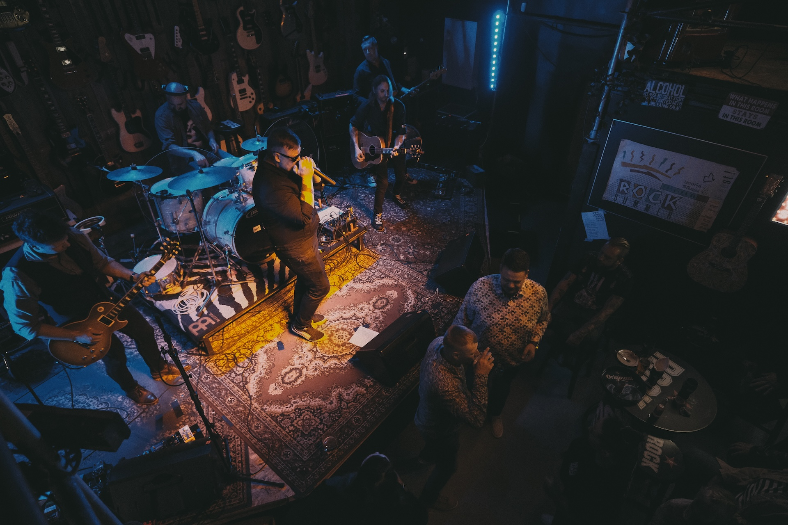
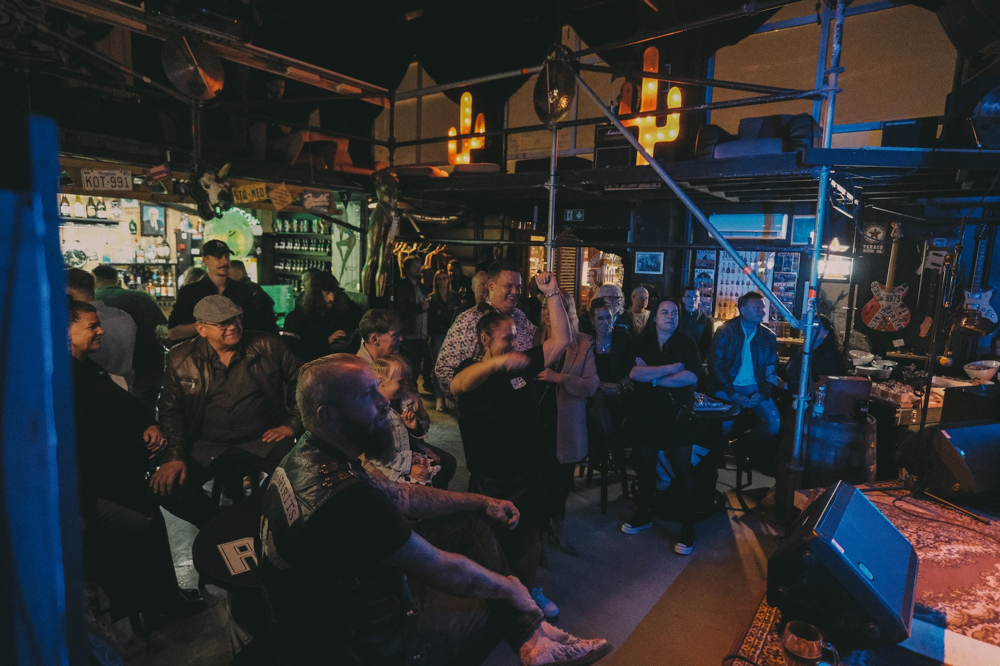

Ruumide rent
Tule tähista Kidrakuuris!
Kidrakuur Kultuuriklubi Tallinnas on ainulaadne koht, kus pidada oma sünnipäev, firmapidu, seminar, kontsert või mõni muu eriline sündmus. Meie hubane ja omanäoline klubi pakub ruumi nii pidulikuks peoks kui ka loominguliseks koosviibimiseks – ideaalne valik, kui sind huvitab ruumide rent Tallinnas.
Avatud saal koos kõrgete lagedega loob kordumatu atmosfääri. Kidrakuuri õhkkond hingab kultuuri ja muudab iga sündmuse eriliseks.
Lisavõimalused:
- Võimalik tellida elav muusika või bänd
- Koostööpartnerite kaudu saab organiseerida ka cateringi
- Kasutada on professionaalne heli- ja valgustehnika, projektor ja ekraan
Kidrakuuris on peetud juba lugematul hulgal üritusi – alates sünnipäevadest ja firmapidudest kuni seminaride ja kontsertideni. Meie sõbralik personal hoolitseb, et sinu sündmus kulgeks muretult, ning baar pakub laia joogivalikut.





